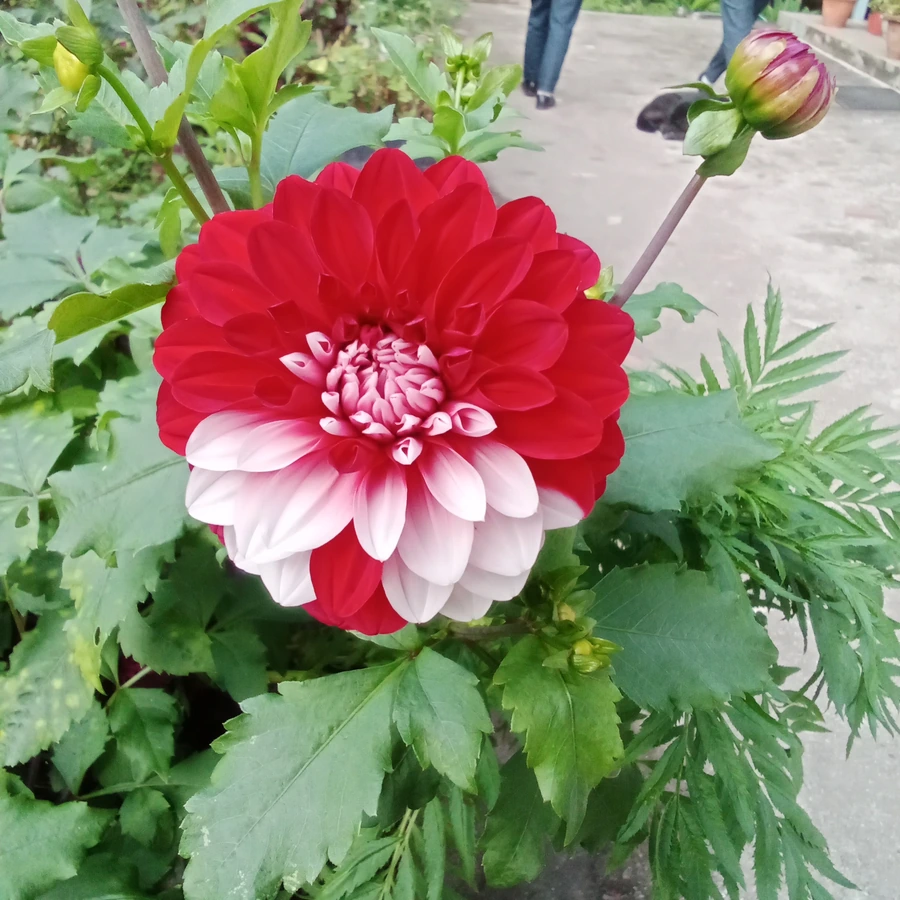

花卉与草本 · 植物界
大丽花 Dahlia pinnata

菊科多年生球根花卉，花大色艳、花型多样，块根形似红薯，原产墨西哥，是该国国花和世界著名观赏花卉。
- 分类
- 门被子植物门纲木兰纲目菊目科菊科属大丽花属
- 栖息环境
- 墨西哥高原的凉爽山地，喜光、喜凉爽干燥、怕积水
- 地理分布
- 原产墨西哥，现世界各地广泛栽培，中国南北各地均有种植
- 保护级别
- 暂无评估
物种志
大丽花为菊科大丽花属多年生草本，地下具膨大块根，形似红薯。株高 30–200 厘米，茎直立粗壮，多分枝。叶片对生，一至三回羽状深裂，边缘有锯齿。头状花序顶生，直径 5–30 厘米，重瓣品种花瓣层层叠叠，有红、黄、粉、白、紫等色，花期 6–10 月，果期 8–11 月。
大丽花原产墨西哥高原，喜阳光充足、凉爽干燥和通风良好的环境，不耐寒也不耐酷热，块根在 0℃ 以下易受冻。它是墨西哥的国花，18 世纪传入欧洲后经园艺家不断杂交选育，如今品种数以万计，花型有单瓣、重瓣、球型、睡莲型、仙人掌型等。块根含菊糖，可作提取果糖的原料；花朵可作切花，花期长、花径大，是庭院和花坛的重要材料。
形态与习性
- 株高30–200 厘米，因品种差异大
- 花期6–10 月，单朵花可开 1–2 周
- 果期8–11 月，瘦果扁平
- 光照喜充足阳光，每天需 6 小时以上
- 水分喜湿润，忌积水烂根
- 土壤疏松肥沃、排水良好的沙壤土
- 繁殖分块根、扦插或播种
- 主要用途庭院花坛、切花、盆栽
趣味知识
- 大丽花的块根形似红薯，因此民间也称“地瓜花”。
- 墨西哥把大丽花定为国花，18 世纪传入欧洲后引发育种热潮。
- 大丽花花径最大可超过 30 厘米，花型有球型、睡莲型、仙人掌型等。
- 块根中含菊糖，可作为提取果糖和膳食纤维的原料。